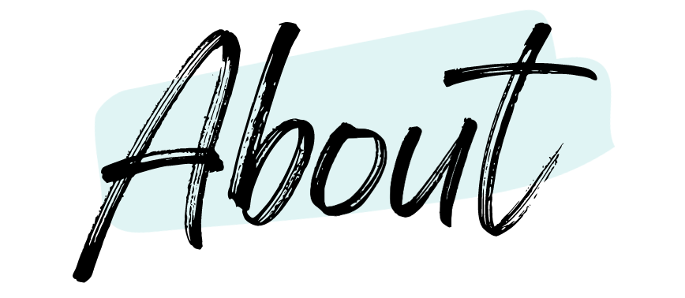

Halina Cox joined Meraki in 2018 as an Executive Assistant to the VP of Meraki Technical Support and Customer Success. During her time as an EA, she worked closely with a global team of Engineers, which sparked her interest in learning more about the field. After taking some time to independently learn more about computer programming, Halina was offered a position as a Software Engineer Apprentice, where she is currently working on fine tuning her software development skills.